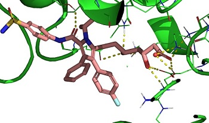
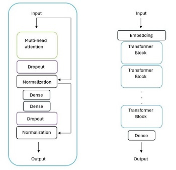
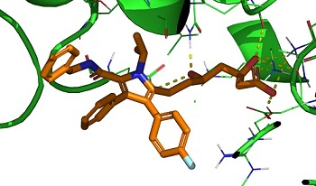
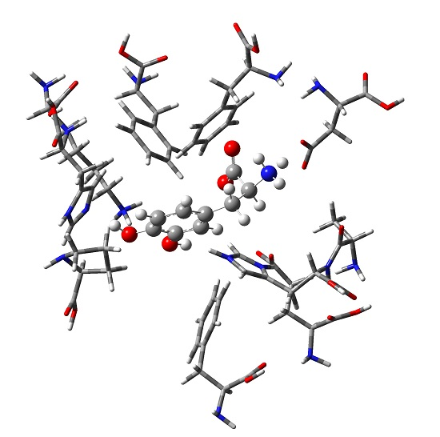

Mauricio Cafiero Computational Chemistry Research
Current Projects
- Designing generative, pre-trained (GPT) models to create virtual screening libraries for drug design.
We have created transformer-based GPTs for creating libraries of molecules to inhibit HMG coenzyme A reductase
(anti-cholesterol drugs, read the paper in
Journal of Chemical Information and Modeling), and are currently working
on RNN and transformer-based GPTs for inhibiting the MAOB enzyme for possible action against Parkinon's Disease.
- See our newest web-apps: upload any dataset with a SMILES column and a target column (values you want to predict) and train
a neural network to predict those target values! Neural netowrks for datasets! Also,
upload or randomly generate a basis set of gaussian orbitals or explicitly correlated gaussian geminals for small atoms and use
stochastic optimization to find the ground state energy! Build a basis set!
- We recently published a paper on three-body interactions in
protein-ligand binding (where the three bodies are the ligand and two amino-acid residues) and published a
second paper which examines general three-body systems
important to drug design and evaluates many families of DFT methods for their accuracy.
- Much of our work is in DFT-studies of protein-ligand binding, usually in the area of drug-design for Parkinson's Disease.
This recent work describes how paracetamol may have some action in
the relief of symptoms of Parkinson's Disease.
- We are developing a set of Javascript-based web-apps for teaching chemistry,
including a introduction to machine-learning
neural networks, where the user can train their own neural network to fit a potential energy surface. We also have apps for
visualizing liquid/solid surface interactions, predicting rovibrational spectra, drawing molecules and predicting their ADME
properties for drug design, and performing calculations for various chemistry practicals.




This is the work of Dr. Mauricio Cafiero and may be used widely though attribution is appreciated.